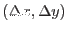
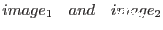
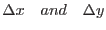
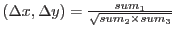
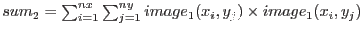
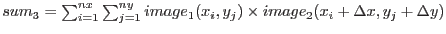

The cross-correlation coefficient, R  between 2 images, , with offsets  between their x and y origins, respectively, is computed from
R  ,
where ,
 ,
 ,
where nx and ny are the image dimensions in the x and y directions, respectively. In the above formulae it is assumed that the mean image values have been subtracted from the images. R can vary from -1 to +1.